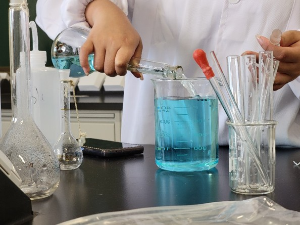
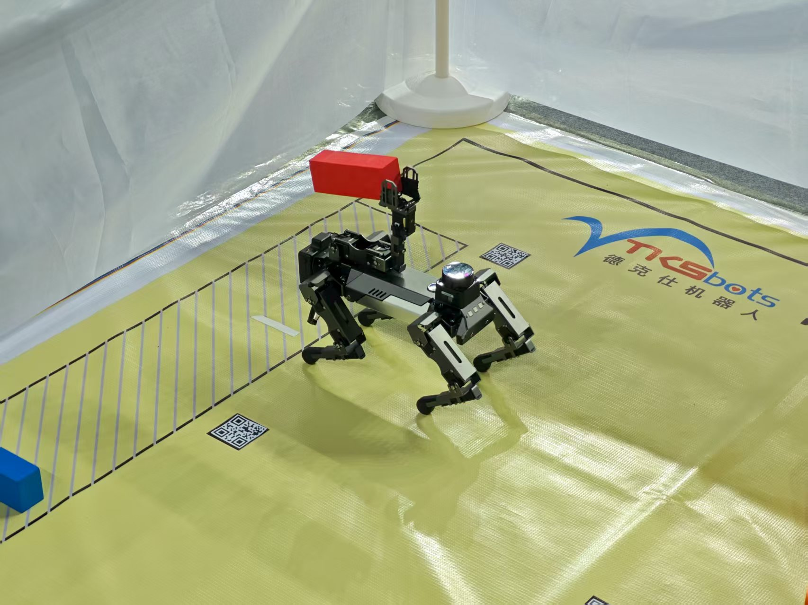

Education
-
Beijing University of Chemical Technology Beijing, ChinaBachelor of Engineering in Automation Sep. 2022 - June 2026 (Expected)
- Average Overall Score: 88.03/100
- Core Courses: Signals and Systems (93), Linear Algebra (92), Embedded System Design (A), Digital Image Processing (A)
Research & Publications
-
First Author | Solution Concentration Monitoring Device Design Apr. 2023 - Dec. 2023Published in University Chemistry (Peer-reviewed Journal, Hosted by Peking University)
- Authored a first-author paper (DOI: 10.12461/PKU.DXHX202404036) detailing a novel vision-based concentration detection device.
- Architected a vision-based system using a Raspberry Pi and OpenCV, establishing a linear model between solution color (HSV) and concentration based on the Lambert-Beer law to achieve a 90% accuracy rate.
- Devised a custom 3D-printed black-box environment and disabled camera auto-white-balance to eliminate light interference, ensuring data integrity and measurement repeatability.
 -
Co-author | Intelligent Bird Recognition for River Ecosystems July 2024 - Sep. 2025Paper submitted to the Chinese Journal of Applied Ecology (A National Core Journal, CSCD Indexed, Under Review)
- Co-developed the YOLOv8-MAT-2H model by integrating MSBlock and ADown modules to enhance feature extraction for small, complex targets in ecological monitoring.
- Optimized the model to improve mAP@0.5:0.95 from 0.704 to 0.722 (+2.57%) while simultaneously reducing model parameters by 20% and GFLOPS by 10%, ideal for edge device deployment.
- Spearheaded strategies to handle environmental occlusions in real-world river settings, contributing directly to the system's final operational accuracy of nearly 80% for the Beijing Water Authority.
-
Research Member | Fiber Optic Biosensor for Tumor Marker Detection Jan. 2025 - Apr. 2025
- Contributed to a project developing a fiber optic biosensor that improved the detection limit by 15 times compared to traditional ELISA technology.
- Executed data processing algorithm optimization and participated in sensor design and validation, helping to reduce detection time from hours to just 5 minutes.
Key Engineering & Competition Projects
-
Team Captain | "Siemens Cup" China Intelligent Manufacturing Challenge Aug. 2024Information & Networking Track, 1st Prize (North China Region)
- Led a team to design and deploy a complete industrial network system for a simulated factory environment.
- Architected the network topology from abstract requirements, defining the IP schema, VLAN segmentation, and firewall access control policies.
- Engineered and commissioned the entire system, configuring Siemens S7 PLCs and industrial switches via TIA Portal to ensure robust, redundant communication.

-
Team Captain | Raicom Robot Developer Competition Oct. 2024Quadruped Robot Collaborative Challenge, 2nd Prize (National Final)
- Directed the team and developed main functional packages using ROS for a quadruped robot to perform autonomous navigation, object manipulation, and animal recognition.
- Engineered an innovative solution to overcome hardware limitations of the Raspberry Pi by implementing a "position-then-detect" strategy, capturing and processing a single frame to bypass real-time video latency.
- Trained and deployed a YOLOv8 model that achieved 98.8% accuracy in identifying six types of animals under variable lighting conditions through targeted data augmentation.

-
Team Member | "China International College Students' Innovation Competition July 2025Project: An intelligent monitoring system for industrial centrifuges, Provincial Semi-finalist
- Owned the functional development and data analysis for the monitoring subsystem within a complex project targeted at the nuclear sector.
- Delivered critical code modules that ensured the stability and integrity of the multi-sensor data stream, foundational for the system's fault diagnosis and vibration suppression capabilities.
Internship Experience
-
Testing Intern | Guangzhou Dapsen Intelligent Equipment Co., Ltd. July 2024 – Aug. 2024
- Analyzed a plastic bottle inspection line to identify critical failure points in the assembly and sensor calibration processes.
- Engineered a revised debugging workflow which was adopted by the team, reducing setup time by an estimated 15% and improving overall operational stability.
Honors & Awards
- 2nd Prize, "Shuwei Cup" University Student Mathematical Modeling Challenge (National) May 2025
- 2nd Prize, Raicom Robot Developer Competition (National) Oct. 2024
- 1st Prize, "Siemens Cup" China Intelligent Manufacturing Challenge (Regional | North China) Aug. 2024
- 3rd Prize, iCAN Innovation and Entrepreneurship Competition (Regional | Beijing) Nov. 2024
- 1st Prize, RoboCup China Family Group Project Competition (University Level) Dec. 2024
- 2nd Prize, People's Scholarship (University Level) 2023 & 2025
- 3rd Prize, People's Scholarship (University Level) 2024